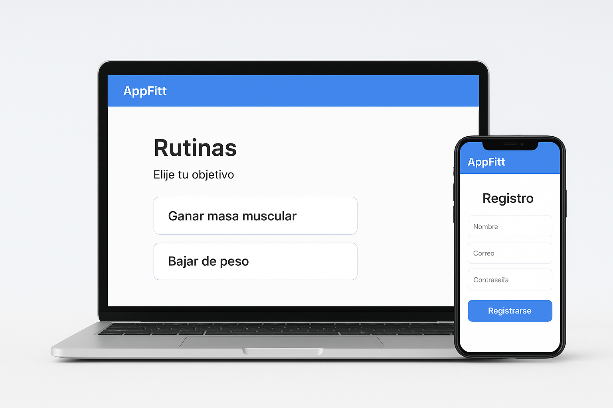
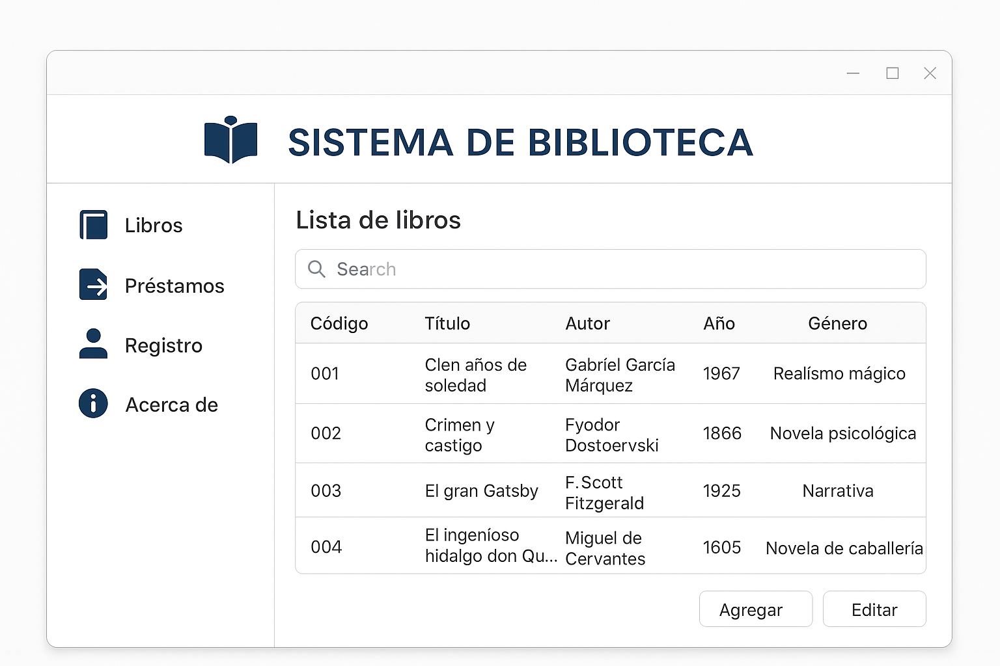
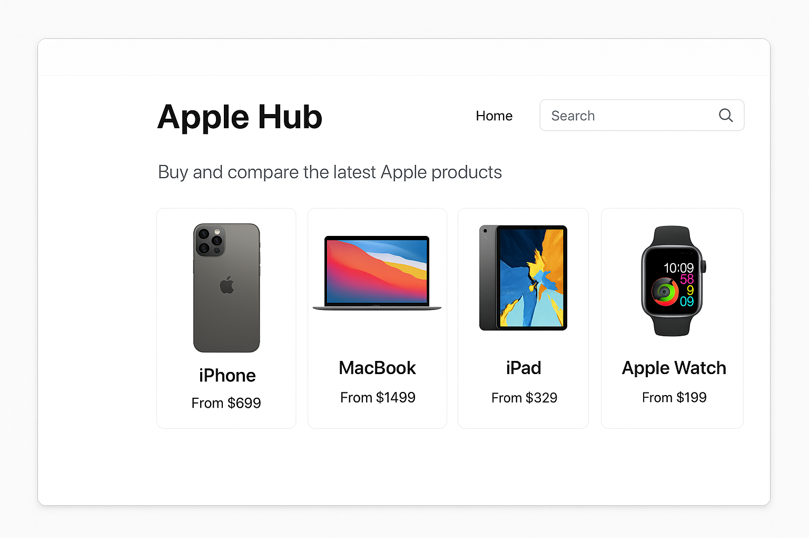

Desarrollador Web | Estudiante de Tecnologia en Desarrollo de Software
Soy un estudiante de Software con gran interés en el desarrollo web, la programación y la tecnologÃa aplicada. Me gusta aprender constantemente nuevas herramientas y lenguajes, buscando siempre mejorar mis habilidades y aportar valor en cada proyecto.
Aplicación desarrollada en Java con base de datos MySQL para crear rutinas personalizadas según el objetivo del usuario.
Proyecto en Python (Tkinter) para el manejo de préstamos y registro de libros.
Apple Hub es un proyecto académico enfocado en el diseño de una plataforma digital para la venta, visualización y comparación de productos Apple. Fue desarrollado utilizando HTML, CSS, JavaScript y MySQL, integrando una interfaz moderna, minimalista y completamente adaptable a diferentes dispositivos.
